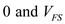
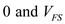

(a)
The resolution is always equal to the weight of the least significant bit (LSB) or the step size. Resolution can be expressed as the ratio of amount of voltage or current per step and the percentage of full scale output.
Here,
The resolution expression is,

In general, for analog to digital converter (ADC), number of different levels will be and steps will be .
Thus, the percentage resolution becomes,
Consider an  analog to digital converter (ADC) whose analog input varies between, then the weight of the least significant bit (LSB) becomes,
analog to digital converter (ADC) whose analog input varies between, then the weight of the least significant bit (LSB) becomes,
This is the resolution of the converter.
Hence, it is proved.
 for resolution, 10 V for in the equation.
for resolution, 10 V for in the equation. is .
is .
 for , and
for , and  for
for  in the equation.
in the equation.